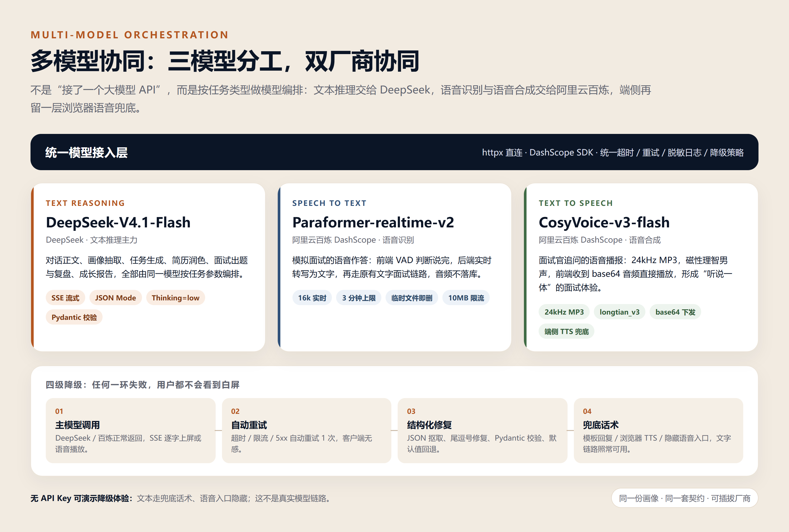
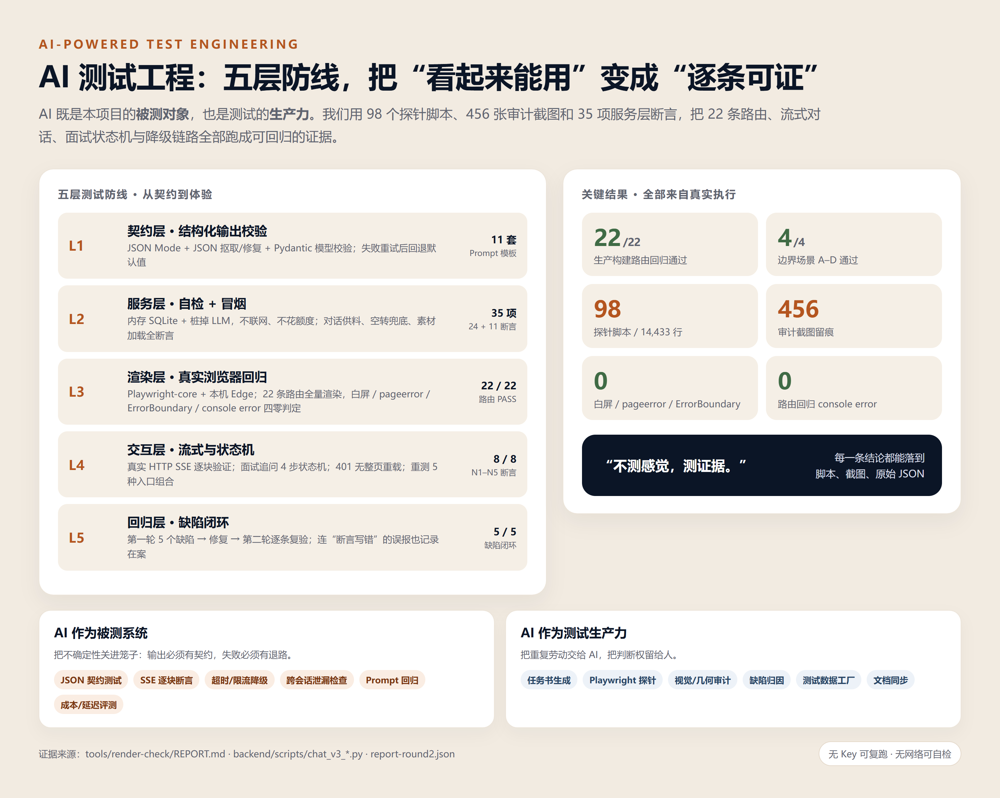
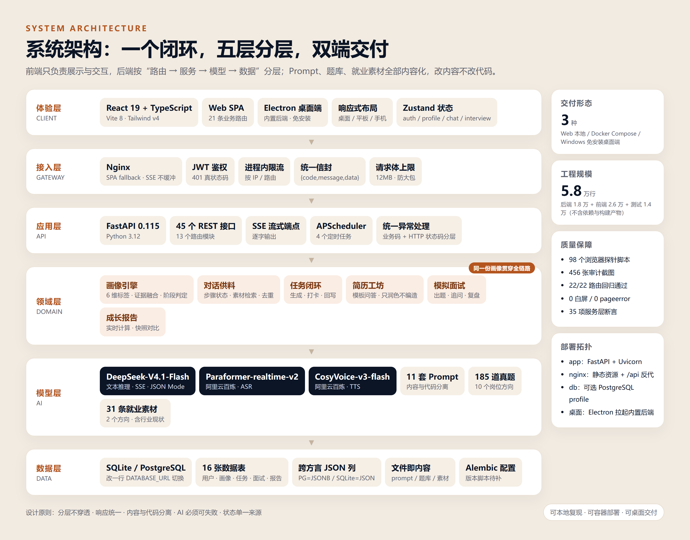
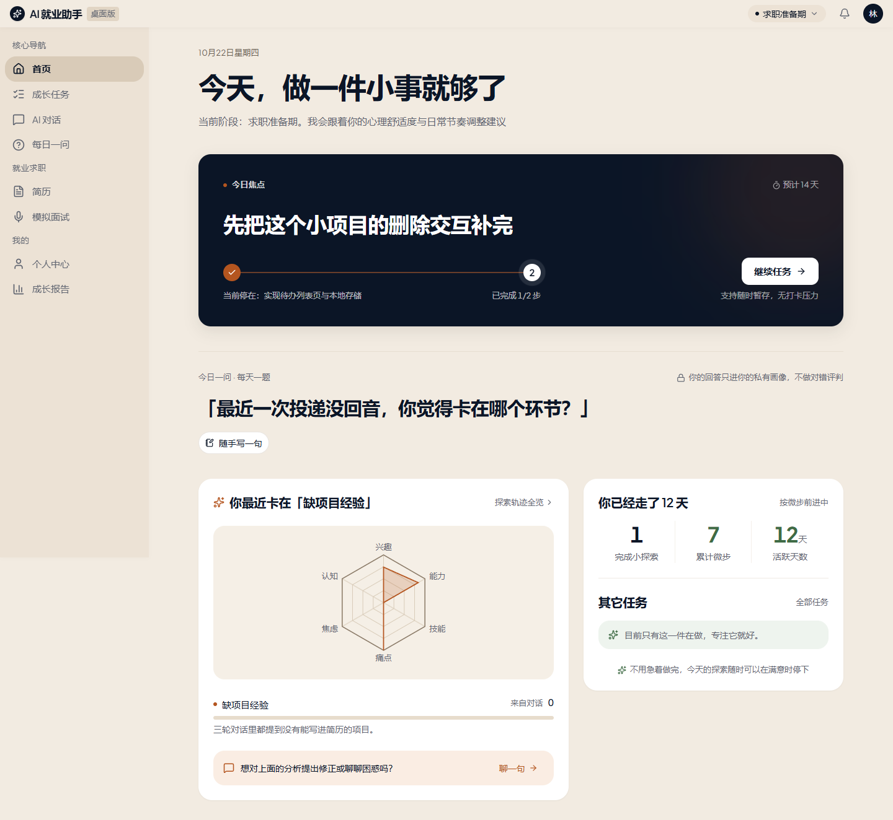
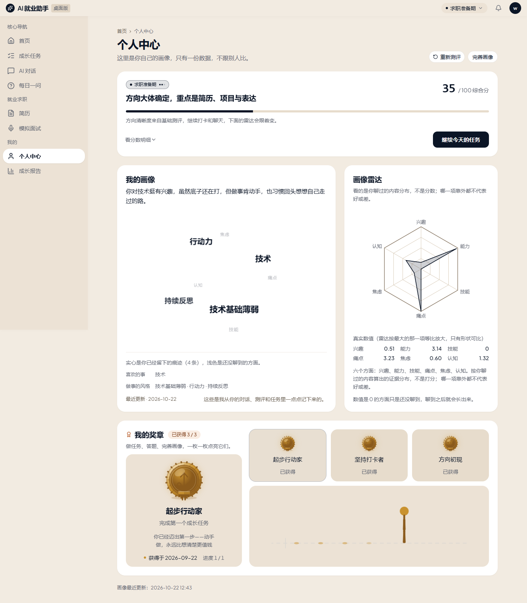
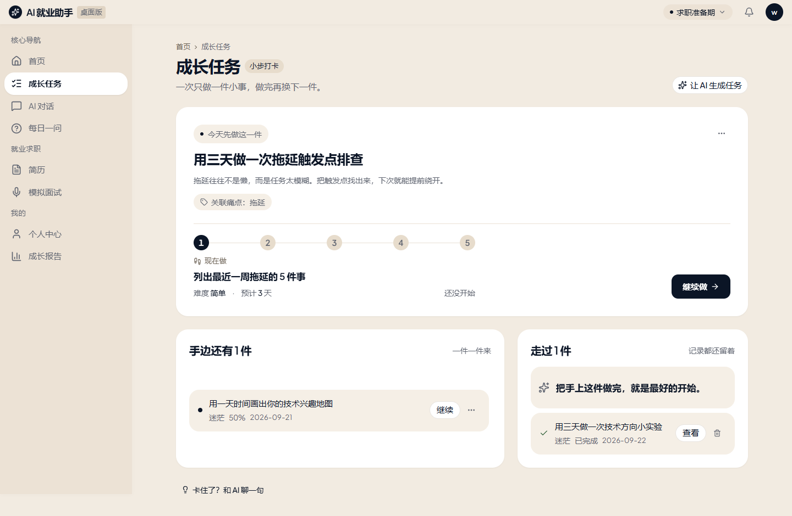
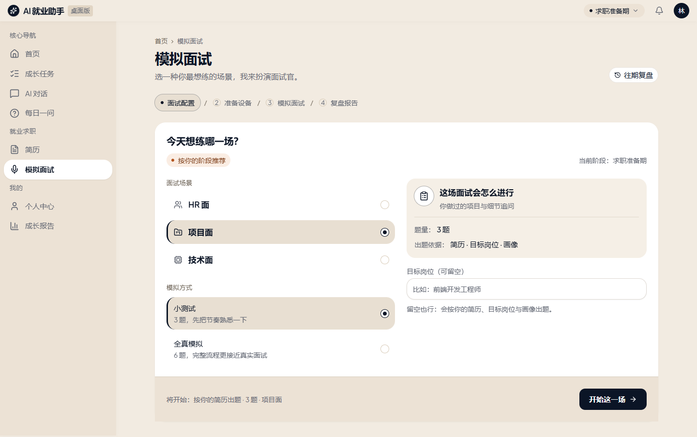

面向高校学生的 AI 求职准备与行动闭环系统
项目介绍文档（参赛版）
一次测评建立画像，AI 在对话、任务、简历、面试与报告中持续更新画像，把「我该做什么」收敛成「今天做这一件」。
参赛团队：WYHAND（个人参赛）
指导教师：无（学生独立项目）
项目方向：AI 应用创新 · 多模型协同 · AI 测试工程
2026 年 10 月
一句话： 一个会记住你、陪你练、逼你动手的 AI 就业搭子——用一份持续更新的画像，把“我该做什么”收敛成“今天做这一件”。
问题： 高校就业指导是一对多，测评报告看完就忘，简历和面试缺少反馈。学生缺的不是信息，而是在正确阶段做对下一件事。
方案： 30 题测评建立初始画像 → AI 对话补充证据 → 生成可打卡的成长任务 → 打卡回写画像 → 简历与模拟面试 → 成长报告。测评、对话、任务、简历、面试、报告读取同一份画像，不存在“各页各说一套”。
三个创新点：
当前证据： 22/22 路由回归、4/4 边界场景、8/8 专项断言、0 白屏 / 0 pageerror / 0 ErrorBoundary；5 个第一轮缺陷全部修复并复验。边界： 这是工程与体验证据，不等同于大规模用户效果验证；用户调研、AI 输出质量评测与校园试点已列入落地计划。
| 评审关注 | 本文回答 | 对应章节 |
|---|---|---|
| 问题是否真实 | 一对多就业指导、测评看完就忘、简历面试缺反馈 | 1.2 / 1.8 |
| 方案是否有创新 | 证据链画像、意图控制、AI 协同、闭环回写 | 2.1—2.6 |
| 技术是否可信 | 分层架构、SSE、结构化输出、多模型降级 | 第四章 |
| 效果是否可证 | 22/22 路由、35 项断言、5 个缺陷闭环、演示案例 | 3.4 / 3.5 / 3.9 |
| 能否落地 | 三种交付形态、校园试点路径、成本与合规 | 1.5 / 7.6 / 4.11 |
AI 就业小助手是一套面向大一至大四学生的求职准备与行动闭环系统。它不是“再做一个聊天机器人”，而是把高校就业指导拆成一条可执行、可回写、可验证的闭环：
结构化测评 → 初始画像 → AI 职业对话 → 成长任务 → 打卡回写 → 简历生成 → 模拟面试 → 成长报告
系统只回答一个问题：这个学生现在最该做的下一件事是什么？ 答案不是一段通用鸡汤，而是一个带步骤、带时长、带完成标准的成长任务；做完之后，画像会变，下一次建议也会变。
在技术形态上，它还是一个典型的多模型 AI 协同项目：DeepSeek 负责文本推理，阿里云百炼负责语音识别与语音合成，浏览器语音作为端侧兜底；三模型分工、双厂商协同，再叠加统一的失败降级策略。我们不满足于“Demo 能跑”，而是要求每一条建议都有画像依据、每一次生成都有契约、每一条链路都有测试证据。
| 项目名片 | 内容 |
|---|---|
| 项目名称 | AI 就业小助手（AI Career Companion） |
| 一句话定位 | 会记住你、陪你练、逼你动手的 AI 就业搭子 |
| 目标用户 | 大一至大四、方向未定或求职准备不足的高校学生 |
| 核心能力 | 画像、对话、任务、简历、面试、报告六位一体 |
| 技术形态 | React SPA + FastAPI + 多模型协同 + Electron 桌面端 |
| 交付形态 | Web 本地运行、Docker Compose、Windows 免安装桌面端 |
| 开源仓库 | https://github.com/WYHAND/AAAHMXZS |
| 项目周期 | 2026 年 9 月—10 月，三个大版本持续迭代 |
高校就业指导的现实是“一对多”：一次讲座覆盖几百人，测评报告看完就忘，简历和面试得不到及时反馈。学生真正缺的不是信息，而是在正确阶段做对下一件事。
我们把问题拆成三个具体缺口：
项目的解法是：先画像，再建议；把建议变成动作；让动作反过来更新画像。 三条原则贯穿所有页面，所有 AI 输出都必须引用当前画像与真实证据，不允许“各页各说一套”。
| 模块 | 用户看到什么 | AI 在里面做什么 |
|---|---|---|
| 登录 / 注册 | JWT 登录、登录态持久化、已登录自动分流 | 无 |
| 职业测评 | 30 题四维度选择题、进度与离开保护、重测入口 | 题目映射标签、生成初始画像与阶段 |
| 首页 | 阶段判断、今日焦点任务、今日一问、AI 发现、成长节律 | 聚合画像与任务，决定“下一步做什么” |
| AI 对话 | 逐字流式回复、多轮上下文、历史会话、结论卡片 | 画像注入、素材供料、跨会话记忆、标签抽取 |
| 成长任务 | 任务列表、步骤详情、打卡、放弃、删除 | 按痛点生成任务与步骤、打卡后回写画像 |
| 个人画像 | 六维雷达、标签球、阶段徽章、人物速写 | 标签融合、证据排序、画像摘要生成 |
| 每日一问 | 每天一道轻量问题、历史回顾、记录节奏 | 出题、反馈、累计 7 题触发画像微调 |
| 我的简历 | 问答式逐字段填写、AI 润色、打印样式 | 只改写用户写下的内容，数字与空白字段强校验 |
| 模拟面试 | 岗位与场景选择、文字/语音作答、追问、复盘评分 | 真题检索、贴合简历改写、2 轮追问、复盘 |
| 成长报告 | 阶段总结、能力变化、与上次快照对比、下一步建议 | 实时计算、建议生成、报告 → 任务闭环 |
| 奖章 | 起步行动家、坚持打卡者、方向初现 | 基于真实行为证据即时结算 |
三种形态共用同一套前后端代码：
uvicorn app.main:app，前端 npm run dev，首次执行 python -m app.db.init_db 建表。完整命令见 README，10 分钟可复现；docker compose up -d；需要 PostgreSQL 时加 --profile postgres，改一行 DATABASE_URL 即可切换；electron/release/win-unpacked，双击 AI就业助手.exe，内置 FastAPI 后端与 SQLite，数据跟着文件夹走，备份就是拷走一个文件。降级说明： 没有 API Key 时，系统进入降级演示——文本链路使用兜底话术、语音入口隐藏，页面不会白屏。这能保证演示不中断，但不等于真实模型效果；答辩时我们会明确区分“真实模型响应”与“离线兜底”。
演示不现场做 30 题测评，直接用已完成测评的预置账号，把时间留给“问题 → 行动 → 变化”：
语音面试、简历润色作为备用演示，不计入 3 分钟主线。
| 维度 | 数据 |
|---|---|
| 后端代码 | 94 个 Python 文件，约 1.8 万行 |
| 前端代码 | 137 个 TS/TSX 文件，约 2.6 万行 |
| 测试脚本 | 98 个浏览器探针脚本，约 1.4 万行 |
| API | 45 个 REST 接口，13 个路由模块 |
| 数据表 | 16 张（用户、画像、测评、对话、任务、简历、面试、报告、奖章等） |
| 内容资产 | 11 套 Prompt、185 道岗位真题（10 个方向）、31 条就业素材 |
| 前端路由 | 21 条业务路由 + 404 兜底 |
| 过程留痕 | 456 张审计截图、56 张逐路由截图、完整决策记录 |
我们不把“痛点”当成已证实的结论，而是分成三层说明：
下一步在校园试点中补三组数据：100+ 份学生问卷、10 名用户访谈、8 周留存与任务完成率。在那之前，本文所有效果描述都限定为“流程与工程证据”，不冒充用户效果结论。
很多产品的“用户画像”是一组拍脑袋的标签。本项目的每条标签都必须回答三个问题：从哪来、证据是什么、什么时候更新的。
extra.evidence，AI 在后续对话里可以引用用户自己说过的原话；总分 = 0.4 × 方向清晰度 + 0.35 × 行动力 + 0.25 × 简历完整度，对应探索期 / 准备期 / 冲刺期。这让 AI 的每一句建议都能落到证据上，而不是“根据你的情况，建议你多实践”。
首页不展示十个入口，而是只给一个今日焦点：当前最该做的那件事。后端 decide_next_action() 按优先级决策：
这条规则的本质是意图控制：先判断用户当前处在哪个阶段、这一轮真正想解决什么，再决定系统该推进哪一步。意图控制不是把每轮台词写死，而是控制“边界、进度、供料”三件事，把措辞自由留给模型。
这条规则把产品从“信息聚合页”变成“行动触发器”。用户不需要判断先做什么，系统已经替他判断了。
这不是“接了一个大模型 API”，而是按任务类型做模型编排。AI 协同的关键不是把三个模型串成一条流水线，而是让每个模型只做自己最擅长的事，再由业务层把结果拼成一条完整体验：
业务层通过统一接入约定调用不同厂商，前端不需要感知差异。AI 协同不仅有“分工”，还有“兜底”：再叠加四级降级——主模型调用 → 自动重试 1 次 → 结构化修复 / 默认值 → 兜底话术 / 浏览器 TTS / 隐藏语音入口。
边界说明： 当前文本模型只有 DeepSeek 一家，尚未接入第二家文本模型做跨厂商 fallback；这里的“降级”是重试、默认值与兜底话术，不是模型互备。语音 ASR/TTS 同属阿里云百炼，浏览器 Web Speech 只是端侧兜底，不计入厂商。接入 Qwen / GLM 作为文本备选已列入下一步。
实际调用标识：文本 deepseek-flash（底层 V4.1-Flash-1017，评测日期 2026-10-22）、语音识别 paraformer-realtime-v2、语音合成 cosyvoice-v3-flash；参数与版本以官方 API 文档和 backend/.env 为准。

图 1 多模型协同：三模型分工、双厂商协同、四级降级
对话使用 SSE（Server-Sent Events）逐块输出，前端用 fetch + ReadableStream 消费，回复按 delta 边界逐字上屏。为了证明“真流式”，测试时单独起了一个真实 HTTP 流服务，每 700ms 写一个 delta，再用 60ms 采样抓页面文本，抓到 3 个严格递增的中间态，且每个中间态都恰好落在 delta 边界上。
同时做了三件容易被忽略的事：
client_msg_id，网络抖动重试不会重复插入消息、不会重复调用模型；EventSource；proxy_buffering off 与 proxy_request_buffering off，否则流会被攒着一起发。这是整个项目的工程底线：外部模型超时、限流、返回脏 JSON，页面都不允许白屏。
测评、对话、任务、简历、面试、报告读取的是同一份画像、同一份任务、同一份简历。
{code,message,data} 信封；视觉方向是“暖纸 · 墨蓝 · 赭金”：暖纸底降低长时间阅读疲劳，墨蓝承担内容与主按钮，赭金只做“现在要看的 / 可以点的 / 数据图形”的唯一强调色。
Panel / PageHeader / StatGroup 构件。项目沉淀了 98 个浏览器探针脚本、456 张审计截图、35 项服务层断言，对 22 条路由做全量渲染回归，并针对流式对话、面试追问状态机、401 跳转、重测入口等高风险路径做专项断言。第一轮发现的 5 个缺陷全部修复并在第二轮复验，连“断言写错导致的误报”也记录在案。详见第三章。
| 方案 | 能做什么 | 缺什么 | 本项目的位置 |
|---|---|---|---|
| 学校就业系统 / 就业课 | 通知、课程、招聘信息 | 一对多、无持续画像、无行动闭环 | 用画像 + 任务 + 回写补上“课后怎么办” |
| 通用 Chatbot（含记忆功能） | 随时聊、信息广、可记住偏好 | 不结构化回写画像、不驱动任务闭环、建议难追溯 | 画像注入 + 证据链 + 下一步动作 |
| 牛客 / BOSS 等招聘平台 | 岗位、题库、投递 | 以岗位匹配和刷题为主，不做长期成长回写 | 不替代招聘平台，做“投递前的准备与行动” |
| 单点简历 / 面试工具 | 简历润色、面试刷题 | 单点效率、前后不连贯 | 同一份画像贯穿测评—任务—简历—面试—报告 |
| 本项目 | 求职准备闭环 + 多模型协同 + 工程测试 | 真实用户规模仍待验证 | 不做“又一个聊天框”，做“就业行动系统” |
对比基于公开功能，不是同题实验；本项目的效果优势仍需 3.8 的评测与试点数据验证，暂不宣称“全面优于”上述产品。
AI 应用最难测的不是“能不能跑”，而是“输出对不对、失败怎么办、体验稳不稳”。本项目的测试体系围绕两件事展开：
一句话概括：AI 可以生成代码，但必须由证据签字。
| 层级 | 测什么 | 怎么测 | 结果 |
|---|---|---|---|
| L1 契约层 | AI 结构化输出是否符合预期 | JSON Mode、JSON 抠取/修复、Pydantic 校验、失败重试、默认值 | 11 套 Prompt 均有明确契约 |
| L2 服务层 | 对话供料、空转兜底、素材加载 | 内存 SQLite + 桩掉 LLM，不联网、不花额度 | 24 项自检 + 11 项冒烟全部通过 |
| L3 渲染层 | 22 条路由是否白屏、报错、崩溃 | Playwright-core + 本机 Edge，真实生产构建，API 全 mock | 22/22 PASS，四项零 |
| L4 交互层 | 流式、追问、401、重测等状态机 | 真实 HTTP SSE、逐步作答、探针计数、五组入口组合 | 4/4 边界场景 + 8/8 断言 |
| L5 回归层 | 缺陷是否真的修好 | 第一轮缺陷清单 → 修复 → 第二轮逐条复验 | 5/5 缺陷闭环 |

图 2 AI 测试工程：五层防线与关键结果
（1）AI 生成页面任务书，把“感觉”变成“验收条件”
13 份任务书覆盖测评、首页、对话、任务、画像、每日一问、简历、面试、报告、登录注册与 404。每份都写明：页面目标、必须出现的信息、空态与错误态、允许修改的文件、禁止修改的文件、验收口径。AI 按任务书施工，测试按任务书验收，减少“做完了但不知道对不对”。
（2）AI 生成 Playwright 探针，把自然语言验收变成可执行断言
98 个 .mjs 脚本、约 1.44 万行，覆盖逐路由渲染、视觉截图、几何测量、颜色/字号检查、雷达图漂移、响应式断点、聊天滚动、面试流程、任务场景、语音冒烟等。典型断言不是“页面有字”，而是：
#root 是否有子节点、body.innerText 是否少于 10 字符（白屏判定）；pageerror、console error、ErrorBoundary 兜底文案是否出现；input[type=password]；（3）AI 做视觉与几何审计，发现“能渲染但不好看”的问题
456 张审计截图按轮次归档，配合 DOM 几何探针检查：卡片圆角、间距、字号阶、颜色 token、雷达图缩放、聊天输入框吸底、报告页宽度、移动端底部 Tab。很多问题自动化断言抓不到，但截图对比 + 几何数值可以。
（4）AI 做缺陷归因与修复建议，人只做决策
第一轮报告给出 5 个缺陷：奖章 API 死代码、面试复盘把 JSON 原样上屏、/test/intro 无重测入口、401 整页硬跳、测评页重复请求。每个缺陷都附复现路径、截图、代码位置与严重度。修复后第二轮用 N1—N5 专项断言逐条复验。
（5）AI 做 Prompt 回归与模型评测
Prompt 是代码的一部分，但改一个词就可能让 JSON 解析失败。项目用自检脚本对素材库、供料层、空转兜底做回归；同时做了推理强度 A/B：同一道复杂题，low 约 490 reasoning tokens / 4.8 秒，high 约 930 tokens / 7.5 秒，最终选择 low 作为对话默认值；结构化任务显式关闭思考，避免思考 token 挤掉 JSON 的 max_tokens。
（6）AI 做测试数据工厂，保证测试可重复
前端 API 全 mock、后端用内存 SQLite、LLM 用桩替换，测试不依赖网络、不消耗额度、不受模型波动影响。同一份 fixture 可以反复跑，失败可复现，修复可验证。
（7）AI 协同链路单独验收
文本、ASR、TTS 三条链路分别有冒烟脚本：文本链路验证 SSE 与降级，语音链路验证音频格式、大小上限与临时文件清理；没有 Key 时验证“语音入口隐藏、文字面试不受影响”。AI 协同不能只看主模型能不能跑，还要看某一条链路断掉时，整体体验是否仍然成立。
| 指标 | 结果 |
|---|---|
| 生产构建逐路由回归 | 22 / 22 PASS |
| 边界场景（无 token / 全 401 / 真流式 / 未测评） | 4 / 4 PASS |
| 新增专项断言 N1—N5 | 6 组 8 项，8 / 8 PASS |
| 白屏 | 0 |
| 未捕获异常 pageerror | 0 |
| ErrorBoundary 兜底 | 0 |
| 路由回归 console error | 0 |
| 服务层自检 + 冒烟 | 35 项全部通过 |
| 探针脚本 | 98 个 / 14,433 行 |
| 审计截图 | 456 张 |
| 第一轮缺陷 | 5 个，全部修复；4 项端到端复验、1 项代码层复验 |
| 测试网络依赖 | 0（自检与冒烟不联网） |
战例一：401 整页硬跳 → SPA 内跳转
第一轮发现 401 时用 window.location.href = '/login'，会丢弃 SPA 状态并整页重载。修复后第二轮用探针验证：window.__spaAlive 保持 1、navigation.type 为 navigate 而非 reload、history.replaceState 被调用 3 次、最终落到 /login 且登录页可渲染。结论不是“看起来好了”，而是四条证据同时成立。
战例二：面试复盘把 JSON 原样上屏 → 逐字段卡片
第一轮复盘页把 question_reviews 整个 JSON.stringify 塞进 <pre>，用户看到的是带引号和花括号的原始 JSON。修复后按 question / answer_summary / score / comment / better_answer 逐字段渲染，并用正则扫描类 JSON 片段，命中 0 处。
战例三：面试追问状态机 → 题号不变量
追问最容易出的 bug 是“追问时题号乱跳”或“追问覆盖主问题回答”。测试用 mock 依次返回 followup(round=1) → followup(round=2) → next_question → finished，断言：
question_id 都是 q-1，追问没有换题；q-2，题号与总数同时前进；finish 恰好调用 1 次，最终进入复盘页。这一组断言同时验证了前端状态机与后端契约，避免“页面看起来对、数据其实串了”。
| 场景 | 配置 | 实测 | 决策 |
|---|---|---|---|
| 对话正文 | thinking=low | 约 490 reasoning tokens / 4.8 秒 | 采用，够用且更快 |
| 对话正文 | thinking=high | 约 930 tokens / 7.5 秒 | 不采用，成本与时延翻倍 |
| 结构化输出 | thinking=disabled | JSON 解析稳定 | 采用，避免思考挤占 max_tokens |
| 对话 max_tokens | 2000 | 实测总用量 447—602 | 留约 3 倍余量，堵住跑飞 |
这类评测不是“模型排行榜”，而是在自己的任务上做取舍：同一个模型，开不开思考、给多少 token，效果和成本完全不同。
边界： 上表是单题工程取舍，不是统计意义上的模型评测；样本量、均值/方差、失败率与完整计费口径尚未补齐，不能据此宣称“成本/时延翻倍”。正式评测将扩到 30—50 条任务集，并固定模型标识与参数。
我们如实记录边界：
下一步计划：补 pytest + Playwright CI、建立 50—100 条 LLM 输出评测集、加入断网/超时/限流的混沌测试、把“报告 → 任务 → 打卡 → 画像”做成端到端回归。
工程测试通过，不等于 AI 输出质量好。我们把 AI 评测单列成一张协议表，没有样本就不宣称准确率：
| 评测项 | 方法 | 当前状态 |
|---|---|---|
| 结构化输出解析成功率 | 回放 100 条任务/Prompt，统计 JSON 解析与 Pydantic 通过率 | 已有 11 套契约与自检，样本待扩 |
| 兜底触发率 | 注入超时、限流、脏 JSON、空回复 | 已有降级测试，待做统计 |
| 建议证据一致率 | 抽 50 条建议，人工判断是否引用了画像证据 | 待做 |
| 简历事实错误率 | 50 份润色前后对比，人工标注数字、职责、技能是否被编造 | 待做 |
| 面试评分一致性 | 双人人工评分 vs 模型评分，算一致性 | 待做 |
| 用户采纳率 / 7 日留存 | 校园试点埋点：建议点击、任务打卡、次周回访 | 待做 |
以一个软件工程大三、目标前端的演示账号为例：
这个案例证明的是闭环能走通、数据能回写，不是“所有学生都会变好”。真实效果需要 3.8 的评测与试点数据来回答。
系统按“体验层 → 接入层 → 应用层 → 领域层 → 模型层 → 数据层”分层，前端只负责展示与交互，路由不写业务，服务不拼 SQL，模型不带展示逻辑。Prompt、题库、就业素材全部内容化，改内容不改代码。

图 3 系统架构：一个闭环、五层分层、双端交付
总分 = 0.4 × 清晰度 + 0.35 × 行动力 + 0.25 × 简历完整度；权重与阈值说明（避免把设计当结论）： 0.4 / 0.35 / 0.25 是产品假设，不是经过信效度验证的最优权重；它表达“方向先行、行动其次、简历再次”的优先级。阶段阈值为 0—30 探索期、31—65 准备期、66—100 冲刺期。四维测评到六维标签采用“维度映射 + 证据权重融合”，不是标准化心理量表；我们把它定位为“引导学生行动的初步自评”，不宣称是成熟职业测评。权重与阈值将在校园试点中用真实样本校准。
测评科学性边界： 30 题来自项目自建的职业准备问卷，题目与映射规则是产品设计，不是经过验证的量表；同一学生重复测评的稳定性、四维到六维的映射效度，仍需在试点中做重测信度与专家评审。
“意图控制”是本项目对话体验的核心。很多 AI 产品把意图控制理解成“给每一轮写死 intent、angle 和话术”，结果用户一开口就听到模板。我们的做法相反：识别意图、控制边界、决定供料，但不替模型决定怎么说。
具体分四层：
我们还做了两个容易被忽略的“反空转”控制：
关键原则是：意图控制的最高级不是把每轮台词写死，而是让模型知道边界、知道进度、知道手里有什么料，然后自己决定怎么说。 这条链路由 24 项自检 + 11 项冒烟专门覆盖，断言里甚至有一条“反向回归”：TurnBrief 里不许再出现 intent / angle / must_deliver 这类指令式字段。
当前局限： 五类意图目前用规则信号词识别，没有混淆矩阵与准确率数据；误判时依靠模型上下文、用户修正与空转兜底。试点阶段计划标注 200 条真实对话，给出每类意图的准确率、误判类型与人工复核结果。
对话供料层是 AI 协同的“调度台”：它不直接生成台词，而是把画像、素材、阶段、任务、简历和面试状态整理成一份可用上下文，交给 DeepSeek；语音链路由阿里云百炼负责 ASR/TTS，前后端通过统一契约协同。
对话不是把整个画像塞进 Prompt 就完事。项目做了三层控制：
这就是本项目对“AI 协同”的理解：不是让一个模型包打天下，也不是把几个模型简单串联，而是让文本模型、语音模型、业务规则、画像数据各自在正确的位置出力，最后由统一契约拼成完整体验。
事件序列固定为 start → delta × n → tag? → done → end，每个事件的 data 都是统一信封。用户消息先落库再开流，流结束后把完整回复落库并回流画像。
client_msg_id 重复提交只回 pending，不重复生成；传统做法是“上传 PDF → 解析 → ATS 评分 → 生成报告”，问题是隐私风险大、解析不稳定、AI 容易编造经历。本项目改成模板 → 用户填 → AI 只润色：
这条链路把“AI 帮你写简历”变成“AI 帮你把真话写得更好”，避免面试时被追问穿帮。
| 层 | 技术 |
|---|---|
| 前端 | React 19、TypeScript、Vite 8、Tailwind CSS v4、Radix/shadcn、Zustand、React Router v7、Recharts、motion |
| 后端 | Python 3.12、FastAPI 0.115、SQLModel、Pydantic v2、APScheduler、Uvicorn |
| 数据 | SQLite（默认）/ PostgreSQL（可切换）、Alembic 配置就绪（版本脚本待补） |
| AI | DeepSeek-V4.1-Flash、阿里云百炼 Paraformer / CosyVoice |
| 桌面 | Electron 33、PyInstaller、electron-builder |
| 部署 | Docker Compose、Nginx、可选 PostgreSQL profile |
| 质量 | Playwright-core + Edge、自检/冒烟脚本、456 张审计截图 |
| 数据 | 存在哪 | 会发给谁 | 保留 / 删除 |
|---|---|---|---|
| 账号、画像、任务、报告 | 本地 SQLite / 自建 PostgreSQL | 不外发；生成建议时以摘要上下文调用模型 | 随账号数据保存，可删除对话/任务/简历 |
| 对话与简历文本 | 本地数据库 | 调用 DeepSeek 时发送必要上下文 | 不用于训练；日志脱敏 |
| 面试语音 | 临时文件 | 阿里云百炼 ASR | 识别后立即删除，不落库 |
| 语音合成文本 | 不落库 | 阿里云百炼 TTS | 只返回音频，不保存原文 |
| 运行日志 | 本地 | 不外发 | 统一脱敏，按周清理 |
当前缺口（如实说明）： 账号注销、数据导出、第三方模型的数据保留条款、焦虑/痛点等推断标签的告知与限制，尚未形成完整的用户协议；这些已列入校园试点前的合规清单。
以下截图均来自真实生产构建，使用 Playwright + 本机 Edge 在 1440×900 视口下拍摄，数据为演示账号。

图 4 首页：只给一个今日焦点，把“我该做什么”收敛成“今天做这一件”

图 5 个人画像：六维雷达、标签球、阶段进度与奖章，同一份画像贯穿全链路

图 6 成长任务：一个任务拆成可打卡步骤，完成一步就回写画像

图 7 模拟面试：岗位、场景、强度选择，出题依据明确写出“简历 · 目标岗位 · 画像”
截至本材料提交日（2026 年 10 月 23 日）：
我们更愿意把“可复现、可审计、可继续迭代”当作现阶段最重要的成果：评委可以按 README 在 10 分钟内跑起来，也可以按测试报告逐条复验。
本项目为独立自研，不是对现有项目的 fork 或二次开发。 业务规则、画像模型、任务闭环、Prompt 编排、面试流程、测试体系均为原创实现；使用的开源组件（React、FastAPI、SQLModel、Tailwind、Recharts、lucide-react 等）仅作为基础设施。
但项目确实经历了三个版本的自我迭代，这部分“优化”可以如实说明。
| 版本 | 时间 | 关键变化 |
|---|---|---|
| V1.0 MVP | 2026-09-18 | 打通注册、测评、画像、对话、任务、简历、面试、报告主链路 |
| V2.0 | 2026-10-03 | 稳定 SSE、统一响应、错误码、画像回流、奖章与定时任务 |
| V2.1 / V3 | 2026-10-12 — 10-23 | 对话供料层重构、简历链路重做、视觉系统换新、多模型语音、测试体系补齐 |
| 优化项 | 之前 | 现在 | 为什么改 |
|---|---|---|---|
| 对话控制 | 每轮指定 intent、angle、频次硬闸 | 只供料、报路况、划三条底线 | 指令太多导致“机器人感”，把措辞自由还给模型 |
| 简历链路 | 上传 PDF → 解析 → ATS 评分 | 模板问答 → AI 只润色 | 降低隐私风险，杜绝编造经历 |
| 聊天追问计数 | 同一方向追问 3 轮后换维度 | 删除计数器 | 用户明确要求删除无用机制，代码必须有用 |
| 视觉系统 | 黑白、12—13px 为主 | 暖纸 · 墨蓝 · 赭金、8 档字号 | 分区读不出来、层级缺失 |
| 401 跳转 | window.location.href 整页硬跳 | SPA 内 replaceState | 保留状态，避免整页重载 |
| 奖章模块 | API 存在但前端从未调用 | 个人中心接入，两态可渲染 | 消除死代码，让激励闭环可见 |
| 面试复盘 | 原始 JSON 上屏 | 逐字段卡片渲染 | 用户看不懂带引号的花括号 |
| 测评重测 | 已测评用户静默回首页 | ?retest=1 确认卡 + 继续上次答题 | 给用户重新测评的入口 |
| 数据库 | 只支持 PostgreSQL | SQLite 默认 + PostgreSQL 可切 | 零安装可复现，降低演示门槛 |
| 语音 | 硅基流动 HTTP | 阿里云百炼 ASR/TTS | 实时性更好，音色更像 HR |
| 测试 | 手工冒烟清单 | 98 个探针脚本 + 456 张截图 | 让“能用”变成“可证” |
项目沉淀了四类可复用资产，后续换一个赛道也能直接复用：
| 角色 | 承担 | 主要工作 |
|---|---|---|
| 项目负责人 | WYHAND | 产品定义、架构设计、后端、前端、测试与文档，最终验收 |
| AI 编程助手 | 辅助 | 任务书初稿、Playwright 探针初稿、文档草稿；不替代人工决策 |
| 人工审查 | WYHAND | 方案取舍、代码审查、缺陷修复、事实与合规检查 |
项目由个人完成，AI 承担“初稿与重复劳动”，人负责“判断与签字”。AI 使用声明： 我们未统计精确的代码占比，也不以代码行数作为创新指标；关键架构、接口契约、验收标准、缺陷归因与修复由人工决策。任务书、决策记录、测试报告与提交历史可追溯，评委可现场抽查任一模块的演进过程。这也是为什么文档里保留了大量决策记录、误报记录与已知限制。
| 阶段 | 对象 | 规模 | 关键指标 |
|---|---|---|---|
| 1. 校内试点 | 就业中心 + 2—3 个院系 | 100—300 名学生 / 8 周 | 测评完成率、任务打卡率、7 日留存、建议采纳率 |
| 2. 校级部署 | 就业中心 | 全校账号接入 | 周活、报告生成量、老师侧反馈 |
| 3. 开源与校外 | 高校 / 教师 | GitHub + 私有化部署 | 部署数、Issue/PR、课程使用反馈 |
成本结构以文本 token 为主，语音按分钟计费、可选；试点期优先保证文本链路，语音作为增值能力。最大的落地风险不是技术，而是学生是否愿意持续打卡，所以试点第一指标定为 7 日留存，而不是注册量。
界面基于 shadcn/ui（Radix UI）与 Tailwind CSS 构建，图表使用 Recharts，图标使用 lucide-react，动效使用 motion；后端基于 FastAPI、SQLModel、Pydantic；语音使用阿里云百炼 DashScope SDK；文本模型使用 DeepSeek API。以上均为开源依赖或公开 API。
业务代码（测评规则、画像模型、任务闭环、Prompt 编排、面试流程、报告计算、测试工具链）为本项目原创实现。
| 证据 | 位置 | 用途 |
|---|---|---|
| 渲染回归报告 | tools/render-check/REPORT.md | 22 条路由、4 个边界场景、N1—N5 断言 |
| 原始测试数据 | tools/render-check/report-round2.json | 逐路由结果与失败项 |
| 对话自检 / 冒烟 | backend/scripts/chat_v3_selfcheck.py、chat_v3_smoke.py | 24 + 11 项断言，不联网可复跑 |
| 页面任务书 | docs/任务书/T01—T13 | 施工边界与验收口径 |
| Prompt 模板 | backend/app/ai/prompts/ | 11 套模板与输出契约 |
| 岗位题库 | backend/app/ai/question_bank/ | 10 个方向、185 道题 |
| 决策与勘误 | docs/开发手册-勘误与决策记录.md | 方案取舍、被推翻的设计、已知限制 |
材料正文已概括关键结论；仓库用于补充原始记录。若赛项要求材料自包含，可将本表对应文件打印为附件。